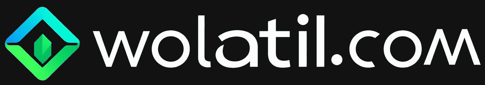

Menu
Ana Sayfa
Ana sayfaya geri dön
Borsa Yapay Zeka
Borsa Yapay Zeka Analizi
Koin Analiz
Kripto Analiz araçları ve veriler
Yapay Zeka Analiz
Yapay zeka anlık istediğiniz koini analiz eder
Koin Paneli
Bir koin ile ilgili tüm analiz ve veriler tek panelde
Wolatil Grafik
Wolatil.com Gözünden Grafik Ekranı
Destek Direnç Seviyeleri
Teknik destek/direnç noktaları
Likidasyon Toplamları
Piyasada oluşan likidasyon toplamları
Likidasyon Seviyeleri
En çok satış olabilecek likidasyon seviyeleri
Likidasyon Haritası
En çok satış olabilecek likidasyon haritası
Analiz Edilenler
Daha önce analiz edilen tüm koinler tek ekranda
Olası Formasyonlar
Yapay zekanın tesbit ettiği olası formasyonlar
Dominans Seviyeleri
Piyasa dominans seviyeleri
Fonlama Radarı
Fonlama oranlarındaki değişiklikleri takip edip açıklar
Dominans Analiz
Önemli Dominans Seviyeleri
USDT Dominans
USDT Dominans Grafik ve Seviyeleri
Dominansa Göre BTC
USDT Dominans Değerine Göre BTC nin fiyatını tahmin eder
BTC Dominans
BTC Dominans Grafik ve Seviyeleri
DXY Seviyeleri
USA Dolar Endeksi Seviyeleri
ETH Dominans
ETH Dominans Grafik ve Seviyeleri
XRP Dominans
XRP Dominans Grafik ve Seviyeleri
SOL Dominans
SOL Dominans Grafik ve Seviyeleri
TOTAL Market Seviyeleri
Btc Eth altkoinler ve stablecoinler dahil tüm kripto paraları kapsar.
TOTAL 2 Market Seviyeleri
Bitcoin hariç tüm kripto paraların toplam piyasa değerini gösterir.
TOTAL 3 Market Seviyeleri
Btc ve Eth hariç tüm kripto paraların toplam piyasa değerini gösterir.
OTHERS Dominans Seviyeleri
Btc Eth ve büyük altkoinler hariç tüm küçük ve orta ölçekli altcoinlerin toplam piyasa değerini gösterir.
Balina Cüzdanları
Büyük yatırımcı cüzdan takip
Balina Cüzdanları
Son 1 Saatte Balinaların Borsalara Gönderimleri
Balina Son 24 Saat
Son 24 Saatte Balinaların Transferleri
Altkoin Balinası
Balinaların aldığı alt koinler
Balina son 1 dk
Son 1 dakika içinde hacmi yüksek oranda yükseliş veya düşüş yapan koinler
Balina Yakalayıcı
Son 1 dakika içinde fiyatı yüksek oranda yükseliş veya düşüş yapan koinler
Balina Fonlama Radarı
Fonlama oranlarındaki değişiklikleri takip edip açıklar
Koin Takip
Koin ve piyasa takibi
Anlık Uyarılar
Tüm borsaları tarayıp uyarı oluşturur.
Açık Pozisyon Radarı
Tüm borsalardaki open interestlere göre analiz yapar.
Koin Radarı
Tüm koinleri anlık yükseliş oranına göre takip edin.
Koin Alarmı
İstediğin koinleri ekle ve yükselişlerine göre tek ekranda izle
Koin Paneli
İstediğin koinin tüm verilerini tek ekranda gör
1 dk Volatil Koinler
Son 1 dakika içinde yüksek oranda hacim yükselişi veya düşüşü yapan koinler
Ani Uçan Koinler
Son 1 dakika içinde yüksek oranda fiyat yükselişi veya düşüşü yapan koinler
Son 1 Saat Zirve ve Dip
Son 1 saat içinde en çok düşen ve yükselen koinler
Kripto Balonları
Koin artış düşüş oranlarının balon şeklinde gösterimi
Haber
Güncel haber ve etkinlikler
Önemli Etkinlikler
Kripto etkinlik takvimi
Ekonomik Takvim
Ekonomik Takvim
Haberin Analizi
Haberlerin anlık yapay zeka analizi ve hangi koine ne kadar etki edebileceği
Araçlar
Kripto analiz araçları
Dex Tarayıcı
Ana borsalarda olmayan DEXler de olan Koinlerin Takibi
Teknik Radar
Tüm koinleri filitreler ile teknik araştırma ekranı
Koin Alarmı
İlgilendiğiniz koinleri girip alarm oluşturarak tek ekranda takip edin
Portföy Yöneticisi
Tüm portföyünüzü tek ekranda takip edin. Yada alıyor gibi simülasyon yapın.
English
AI Analysis Tools
AI Analysis Tool
You can make AI Analysis for any coin
Coin Dashboard
You can see all analysed coins at one screen
Support & Resistance Zones
See Support and Resistance Zones With Graphic
Liquidation Levels
Liquidation Levels of Anycoin with Graphic.
Technical Radar
Filter by any indicator all coins